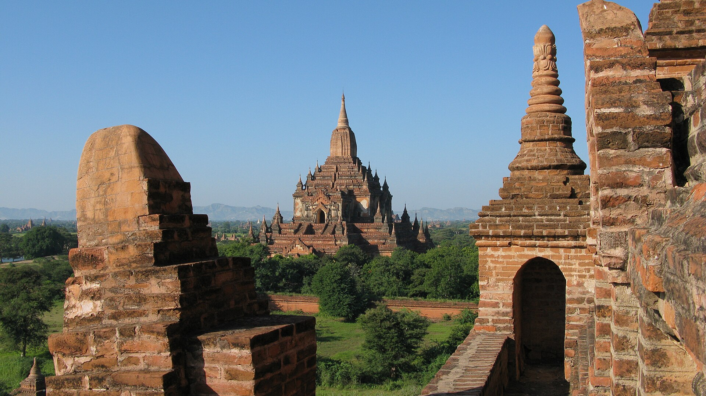
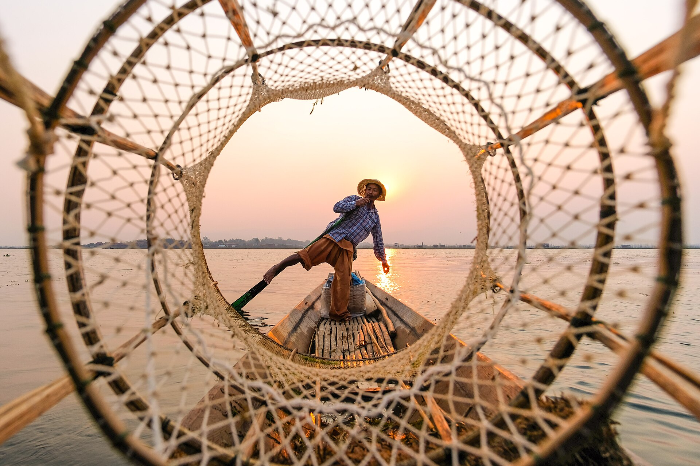
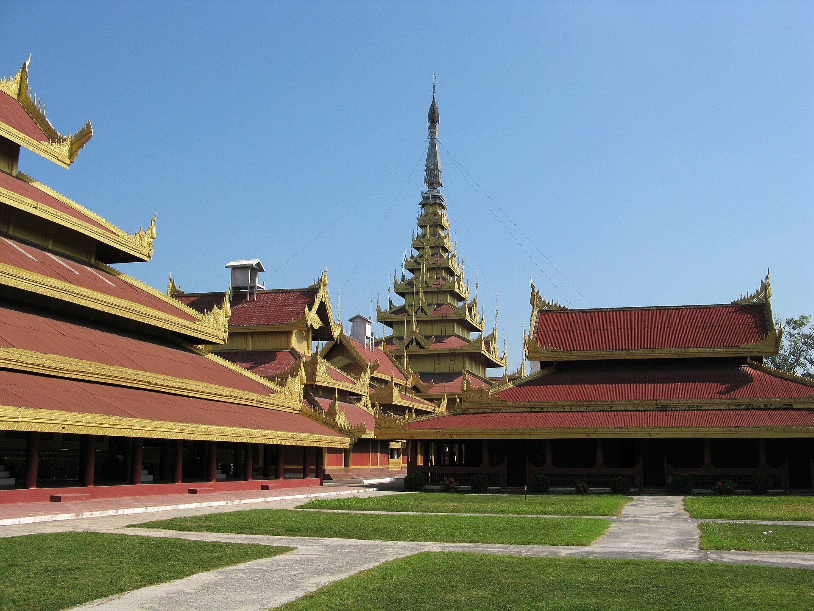
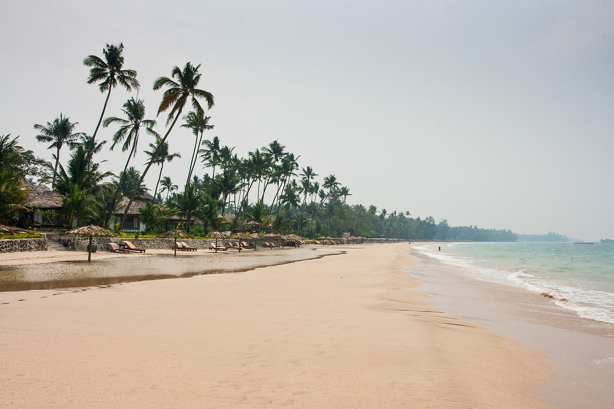
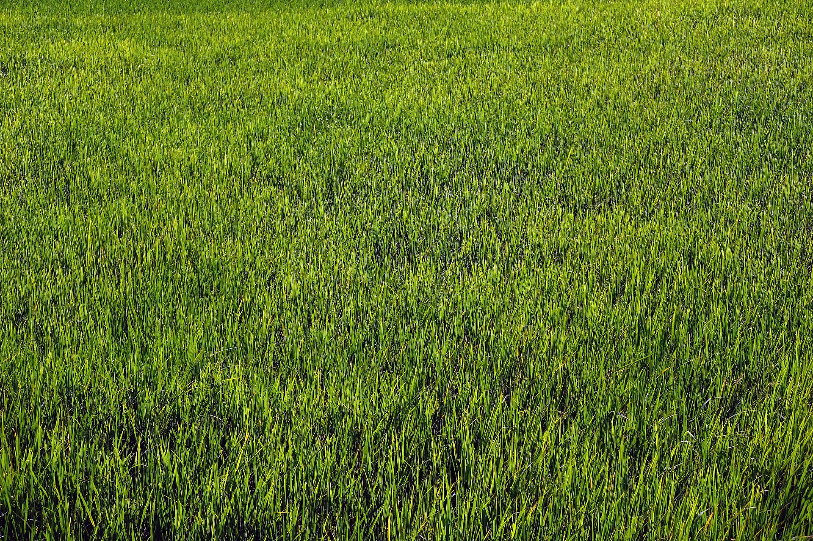
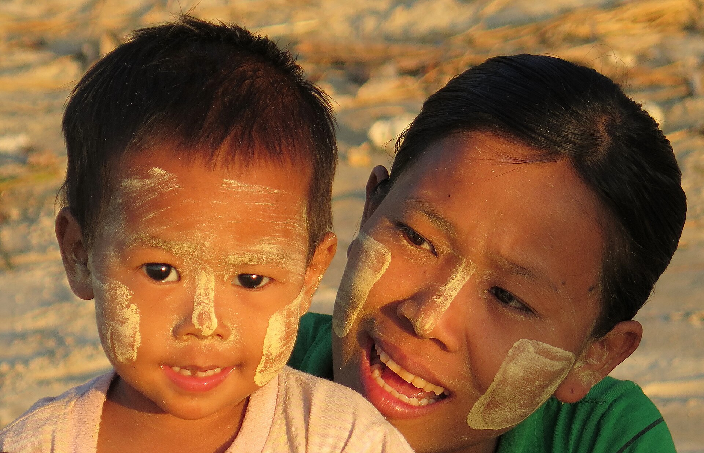
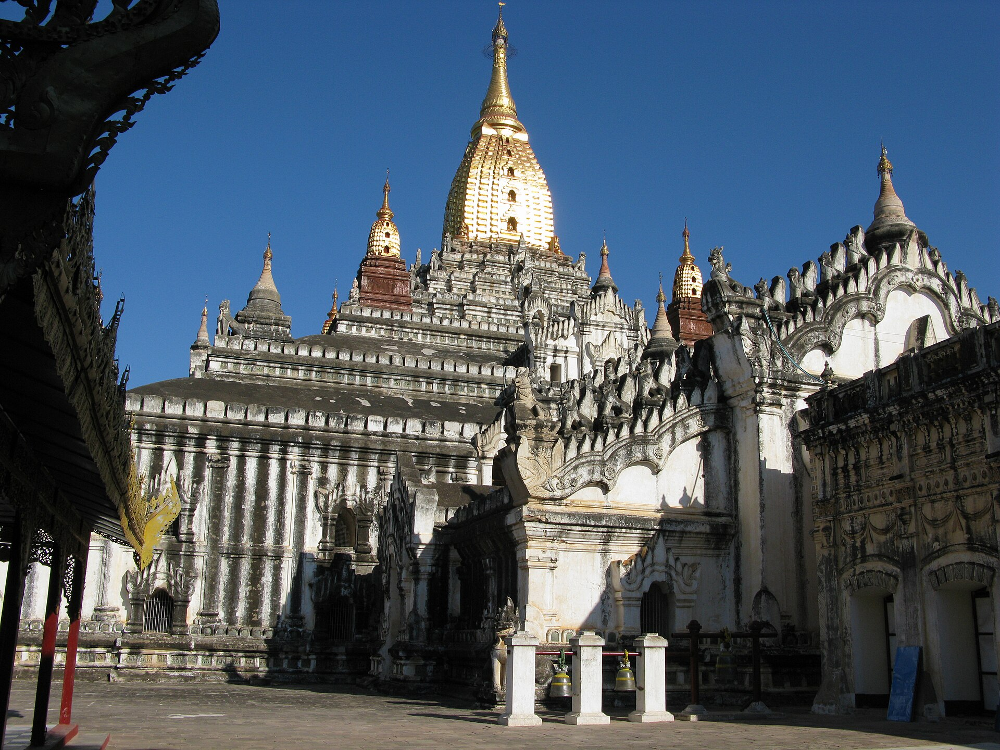

Image and media credits
Every photograph and video on this site is freely licensed and comes from Wikimedia Commons. The photographers and licence terms are listed below, as the licences require.
Attribution
Photographs
Images have been resized for the web; no other changes were made. Each entry links to the original file page on Commons.
-

Bagan temple plain
Home page hero and video poster.
-
Sulamani Temple, Bagan
Bagan card on the attractions page.
-

Leg-rowing fisherman, Inle Lake
Inle Lake card on the attractions page.
-
Shwedagon Pagoda, Yangon
Shwedagon card on the attractions page.
-

Mandalay Palace
Mandalay card on the attractions page.
-

Ngapali Beach
Ngapali card on the attractions page.
-

Rice fields at Hpa-An
Hpa-An card on the attractions page.
-

Thanaka, Myanmar
Lead image on the culture page.
-

Ananda Temple, Bagan
Lead image on the history page.
Attribution
Video
“Sunset seen from Shwesandaw Pagoda, Bagan, Myanmar — 20141209” by Jacklee, licensed CC BY-SA 4.0. The clip is shown on the attractions page and was resized from the original; see the original file page on Wikimedia Commons.
Reusing this site's media
The photographs and video remain under the licences above and belong to their photographers. If you reuse them, keep the attribution and licence notice. The ambient music is generated in the browser with the Web Audio API and is not a recorded file.